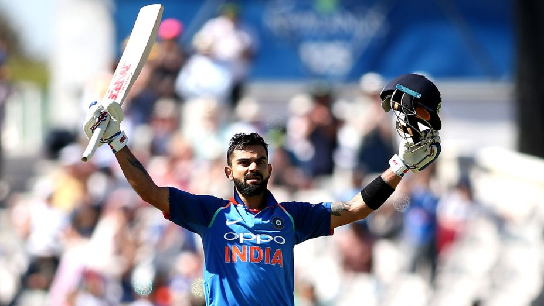
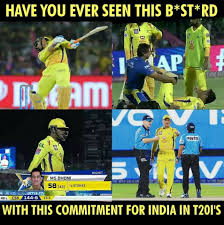
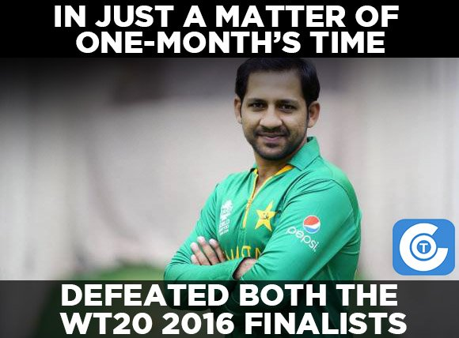

This is the Cricket Page



Cricket is a bat-and-ball game played between two teams of eleven players on a field at the centre of which is a 20-metre (22-yard)
pitch with a wicket at each end, each comprising two bails balanced on three stumps. The batting side scores run
s by striking the ball bowled at the wicket with the bat, while the bowling and fielding side tries to prevent this and
dismiss each player (so they are "out"). Means of dismissal include being bowled, when the ball hits the stumps and dislodges
the bails, and by the fielding side catching the ball after it is hit by the bat, but before it hits the ground. When ten players
have been dismissed, the innings ends and the teams swap roles. The game is adjudicated by two umpires, aided by a third umpire and
match referee in international matches.
They communicate with two off-field scorers who record the match's statistical information.